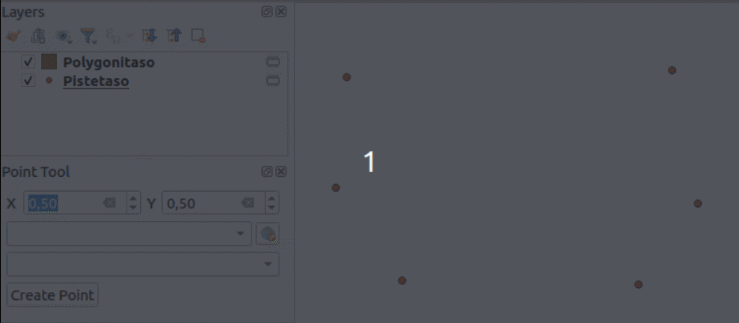
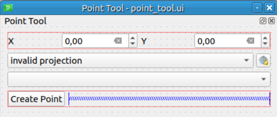

Exercise 7: Point tool
The point of this exercise is to create a point tool into which you can
enter coordinates and create point features at that location. In the
GUI there is a drop-down menu for suitable layers (only point layers
are shown). If no layer is selected the user has to select a CRS and
then the tool creates a new point layer with that chosen CRS. Then a
new point feature is created to the layer and its coordinates saved
to fields called x and y.

If the user hasn’t chosen a layer or a CRS the tool gives an error. If the user has chosen a point layer the CRS widget deactivates and doesn’t affect the added points in any way.

In the last exercise each step was gone over in a lot of detail.
This exercise is more independent. However the tool has a different
kind of GUI where it opens as a panel QDockWidget. Let’s go
over creating a panel GUI first.
Exercise 7.1: Creating a panel
Open Qt Designer and in the New Form dialog select QDockWidget from under the Widgets menu. Change the name of the widget to PointToolDockWidget. Create a GUI similar to this image:

- X: QgsDoubleSpinBox (name: xSpinBox)
- Y: QgsDoubleSpinBox (name: ySpinBox)
- QgsProjectionSelectionWidget (name: crsWidget)
- QgsMapLayerComboBox (name: layerComboBox)
- QPushButton (name: createPushButton)
Save the GUI to this path: test-plugin/testplugin/resources/ui/point_tool.ui.
If you prefer you can save an icon for the tool to the
test-plugin/testplugin/resources/icons/point_tool.png path. You can
create an icon yourself of download this image:
Create a new file test-plugin/testplugin/ui/point_tool_dockwidget.py and add this code:
import logging
from typing import Optional
from qgis.PyQt.QtCore import pyqtSignal
from testplugin.core.pointtool import PointTool
from qgis.PyQt.QtWidgets import (
QDockWidget,
QWidget,
)
from testplugin.qgis_plugin_tools.tools.custom_logging import bar_msg
from testplugin.qgis_plugin_tools.tools.decorations import log_if_fails
from testplugin.qgis_plugin_tools.tools.resources import load_ui, plugin_name
FORM_CLASS: QWidget = load_ui("point_tool.ui")
LOGGER = logging.getLogger(plugin_name())
class PointToolDockWidget(QDockWidget, FORM_CLASS):
closingPlugin = pyqtSignal()
def __init__(self, iface, parent=None):
"""Constructor."""
super(PointToolDockWidget, self).__init__(parent)
self.setupUi(self)
def close_event(self, event):
self.closingPlugin.emit()
event.accept()Open test-plugin/testplugin/plugin.py and make the following changes:
Edit the imports:
There should already exist an import for QCoreApplication and QTranslator.
Add Qt to the same command.
from qgis.PyQt.QtCore import Qt, QCoreApplication, QTranslatorThere should already exist an import for plugin_name.
Add resources_path to the same command.
from testplugin.qgis_plugin_tools.tools.resources import plugin_name, resources_pathImport the dockwidget class which was previously defined.
from testplugin.ui.point_tool_dockwidget import PointToolDockWidgetEdit the constructor (__init__ method) of the Plugin class. Add
these rows:
self.dockwidget = PointToolDockWidget(iface)
self.pluginIsActive = FalseAdd to the initGui() method:
self.add_action(
resources_path("icons/point_tool.png"),
text=tr("Point Tool"),
callback=self.open_point_tool,
parent=iface.mainWindow(),
)Add to the onClosePlugin() method:
self.dockwidget.closingPlugin.disconnect(self.onClosePlugin)
self.pluginIsActive = FalseAdd a new method open_point_tool():
def open_point_tool(self) -> None:
"""Opens point tool dock widget"""
if not self.pluginIsActive:
self.pluginIsActive = True
self.dockwidget.closingPlugin.connect(self.onClosePlugin)
iface.addDockWidget(Qt.LeftDockWidgetArea, self.dockwidget)
self.dockwidget.show()You can also already create a new file test-plugin/testplugin/core/pointtool.py:
from testplugin.core.exceptions import PointToolException
class PointTool:
passAnd add to the test-plugin/testplugin/core/exceptions.py file:
class PointToolException(QgsPluginException):
passReload the plugin. Clicking on the tool should open a new panel to the left side of the QGIS window.
Exercise 7.2: Point Tool
Next implement the functionality that was previously defined. If you need help you can ask the trainer or look at the sample plugin:
test-plugin/testplugin/plugin.py
test-plugin/testplugin/ui/point_tool_dockwidget.py
test-plugin/testplugin/resources/ui/point_tool.ui
test-plugin/testplugin/core/pointtool.py
test-plugin/testplugin/core/exceptions.py
Exercise 7.2.1: Extra challenge - labeling
When the tool creates a new layer, add a style to it. The style should include a label that shows the x and y coordinates of the point on the map:

Exercise 7.3: Tests
Create a new file test-plugin/tests/test_point_tool.py.
Write two tests:
test_create_new_point_layer()test_add_point_to_layer()
In the first test a point is created without a selected point layer in which case the tool should create a new point layer. In the other one points are added to an existing layer.